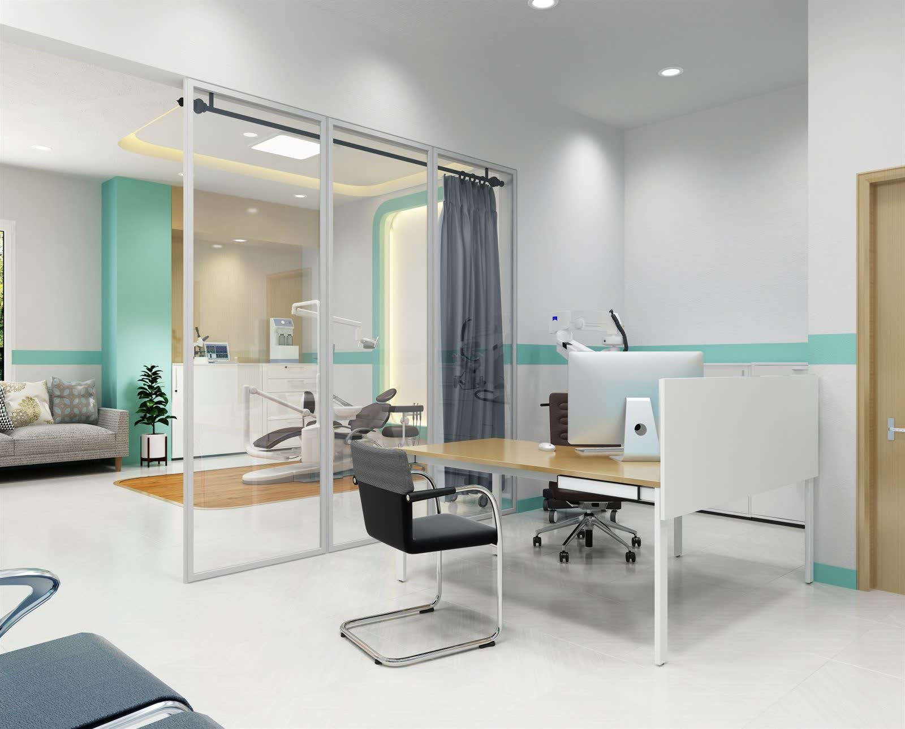

facility
院内のご案内
院内は段差のないバリアフリー設計です。車いすやベビーカーのままでも、受付から診察室まで移動していただけます。
photo — 受付

photo — 待合室photo — キッズスペース
photo — 視野検査室

equipment
主な検査機器

光干渉断層計（OCT）網膜や視神経の断面を撮影し、緑内障や黄斑の病気の診断に役立てます。
 視野計
視野計自動視野計見える範囲を測定します。緑内障の早期発見や経過観察に用います。
眼底カメラ
眼底カメラ目の奥の血管や網膜を撮影し、画像を見ながらご説明します。
眼圧計
非接触型眼圧計空気を当てて目の圧を測ります。目に器具が触れない検査です。
※ 機器名は仮の内容です。実際の導入機器に差し替えてください。
はじめての方の持ち物や、
受診の流れをご案内しています。